Binary Adding Machine
I have recently began reading the renowned "Code: The Hidden Language of Computer Hardware and Software" by Charles Petzold. You can find it here. In chapter twelve, Charles describes how to make a simple binary adding machine to add two 8-bit binary numbers. I decided to create an implementation of this machine in Minecraft and also in JavaScript. The full JavaScript repository can be found here.
In this post, we will walk through the entire process step by step. I will show how I was able to follow the instructions in chapter twelve to create this machine in both JavaScript and Minecraft.
Introduction
To add two 8-bit binary numbers, we first need to be able to add two 1-bit binary numbers. The sum of these two 1-bit numbers will be a 2-bit number. We'll call the first bit of this 2-bit number the "sum" bit and the second the "carry" bit. If you wanted to sing a song about it, you might say:
0 plus 0 equals 0.
0 plus 1 equals 1.
1 plus 0 equals 1.
1 plus 1 equals 0, carry the 1.
The following addition table describes the sums of our two 1-bit numbers.
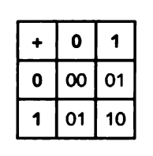
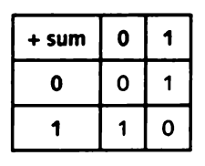
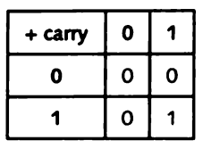
Logic Gates
To do all of this, we need to make some logic gates. We'll start with the AND gate, because we can use it to calculate the carry bit. Here is the AND gate I have built in Minecraft (with a little help from Mumbo Jumbo).

As you can see, the output is a voltage only if both the inputs are a voltage. If one or the other inputs is not a voltage, the output is not a voltage.
Here is the AND gate I created in JavaScript:
// AND gate
const andGate = (a, b) => {
if (a && b) {
// Both inputs are a voltage, therefore the output is a voltage
return 1
} else {
// Both inputs are NOT a voltage, therefore the output is NOT a voltage
return 0
}
}
We can use this truth table to confirm our implementations are correct.
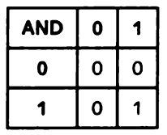
This is the symbol electrical engineers use to describe an AND gate:
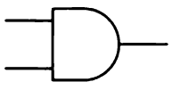
Now we need a gate to calculate our sum bit. To create a gate that can perform this calculation, we first need to create two more logic gates: the OR and the NAND gate.
Here is the OR gate I made in Minecraft:

Notice that the output is a voltage if either (or both) of the inputs is a voltage.
This is the OR gate I made in JavaScript:
// OR gate
const orGate = (a, b) => {
if (a | b) {
// Either a or b is a voltage, therefore the output is a voltage
return 1
} else {
// Neither a nor b are a voltage, therefore the output is NOT a voltage
return 0
}
}
We can confirm that these implementations obey this truth table.
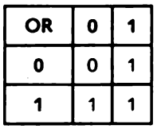
This is the symbol for the OR gate:
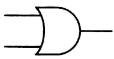
The NAND gate is simply the AND gate with an inverted output. So all I did in Minecraft was add an inverter to the output of the original AND gate.

In JavaScript:
// NAND gate
const nandGate = (a, b) => {
if (a && b) {
// Both inputs are a voltage, therefore the output is NOT a voltage
return 0
} else {
// Both the inputs are NOT a voltage, therefore the output is a voltage
return 1
}
}
Truth table for the NAND gate:
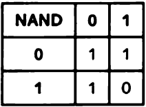
The following symbol describes the NAND gate.
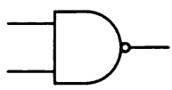
Notice how it's exactly the same as the AND gate symbol, but with a little circle on the output. This little circle means the signal is inverted at that point.
Why did we create these two gates you ask? What do these gates have to do with calculating the sum bit? If we connect the two outputs of these gates to an AND gate, we get an XOR gate. We can use a XOR gate to calculate our sum bit.
Here is the XOR gate I have built in Minecraft:

As you can see, I connected the A and B inputs of the OR gate (on the left) to the A and B inputs of the NAND gate (on the right), just like this:
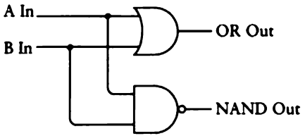
And then I connected their outputs to the inputs of an AND gate, like this:
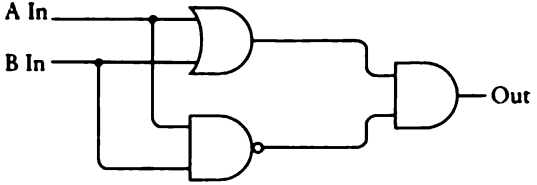
Now let's confirm that this implementation obeys the following truth table.
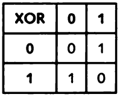

This is the symbol for the XOR gate:
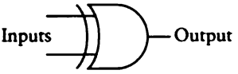
This is my JavaScript implementation:
// XOR gate
const xorGate = (a, b) => {
return andGate(orGate(a, b), nandGate(a, b))
}
This is great! Now that we can calculate both our carry and our sum bit, we are well on our way to adding two 1-bit binary numbers.